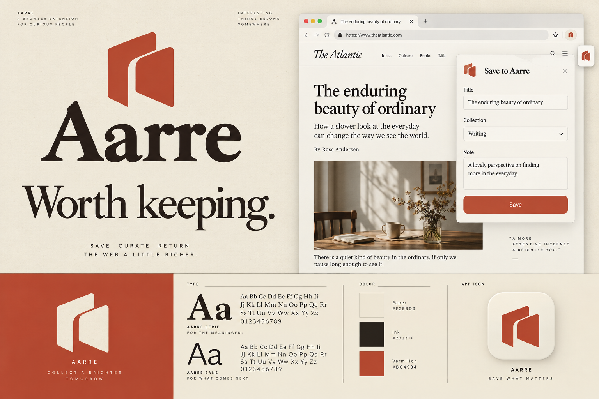
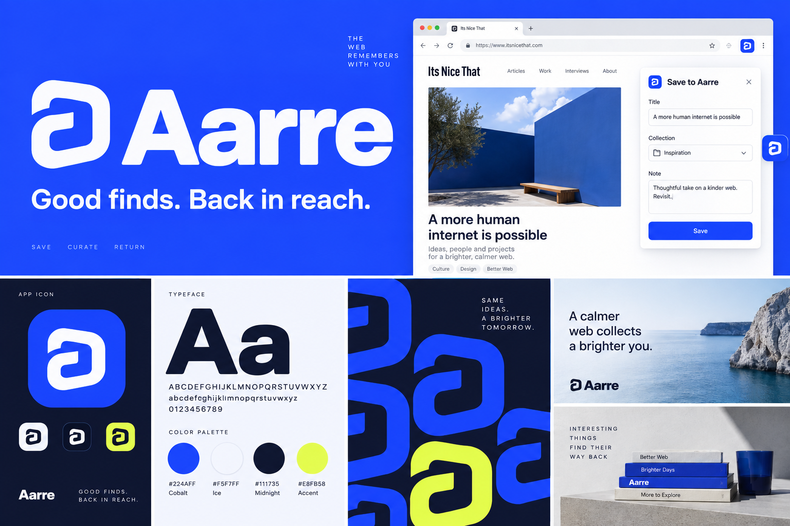
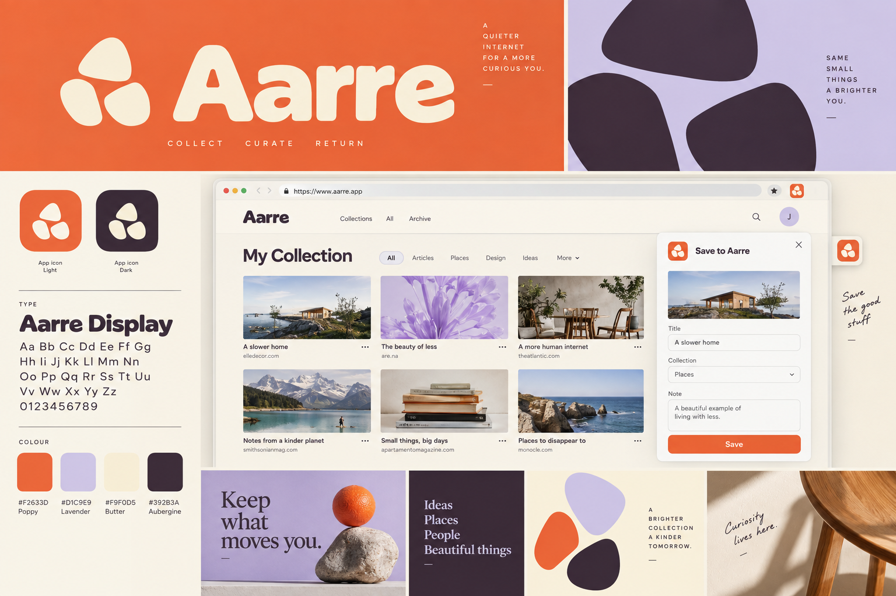
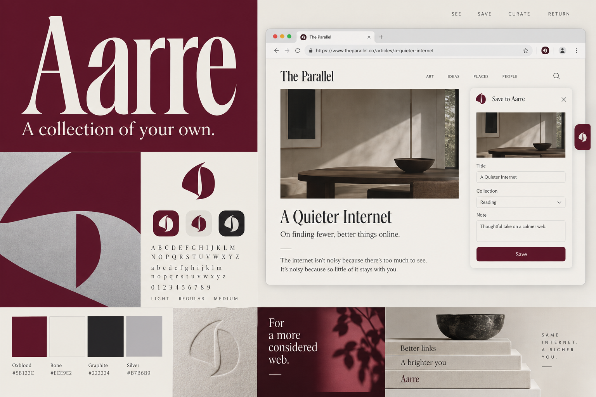
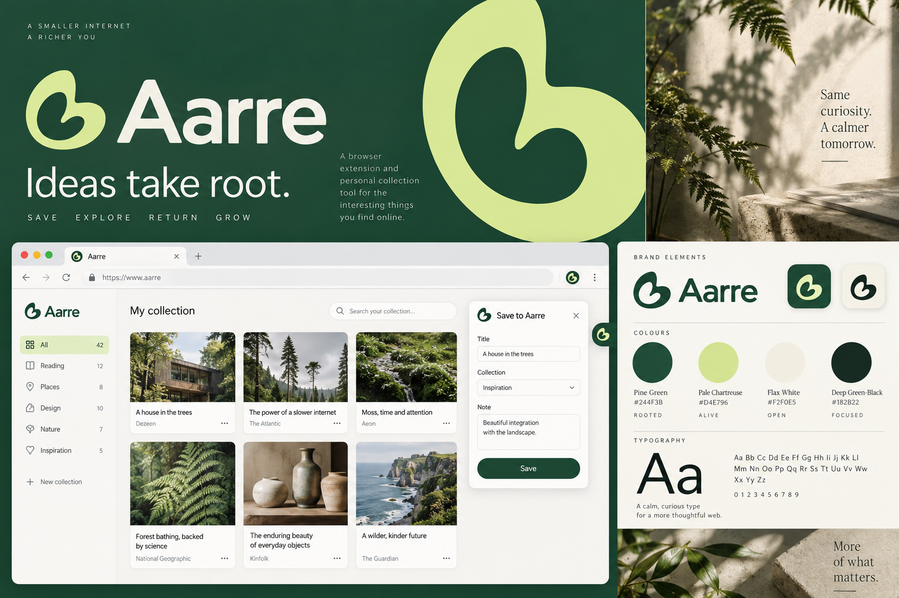
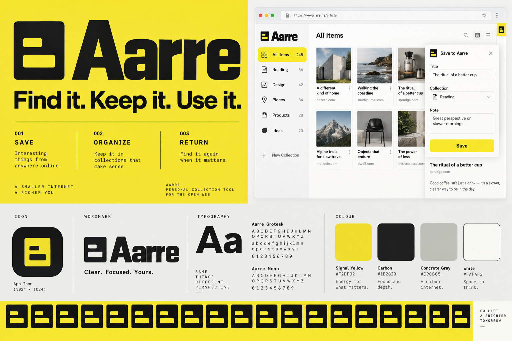
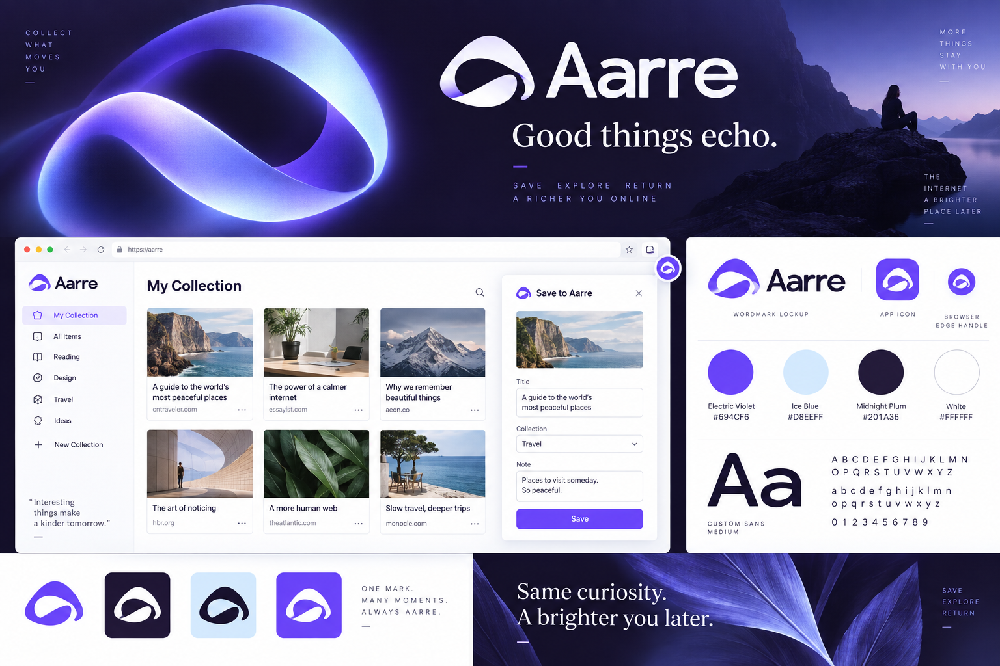
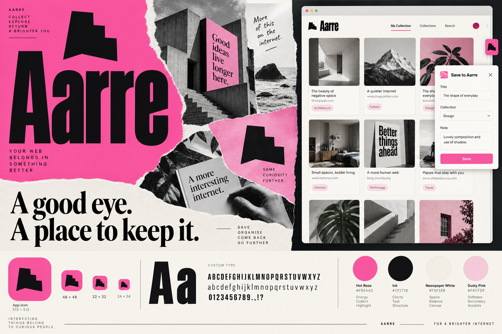
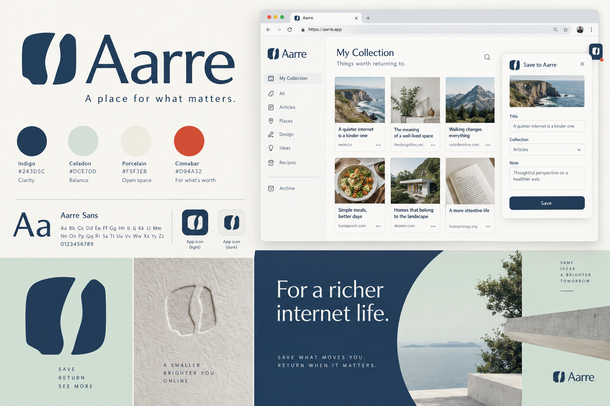
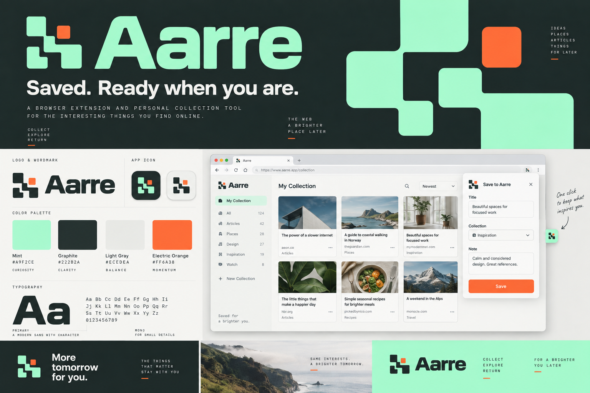

十套品牌视觉提案
01–04 为首轮，05–10 为本轮新增。每套包含标志、字标、配色、字体和产品应用示意。
直接查看新增六套 ↗
01 / 藏阅 温暖编辑 · 纸张、墨色与朱砂↗
02 / 回流 鲜明数字 · 钴蓝、白色与荧光黄↗
03 / 拾集 轻松收藏 · 橘红、淡紫与奶油色↗
04 / 珍本 艺术品牌 · 深酒红、骨白与银灰↗
05 / 林间 新增自然生长 · 松绿、嫩黄与亚麻白↗
06 / 索引 新增精密工具 · 信号黄、炭黑与水泥灰↗
07 / 余波 新增流动数字 · 电紫、冰蓝与夜色↗
08 / 剪藏 新增独立杂志 · 亮粉、墨黑与新闻纸白↗
09 / 藏印 新增东方留白 · 靛蓝、浅玉与朱红↗
10 / 闪存 新增像素新潮 · 薄荷、电橙与石墨黑↗藏阅
把收藏做成一本值得反复翻阅的私人刊物。
纸张色承载内容，朱砂色建立识别；衬线字标与简洁的页片符号构成温暖、安静的编辑气质。
回流
让好内容流回眼前，形成鲜明的数字产品记忆。
钴蓝建立主识别，回流符号延展为动态感图形；粗体无衬线字与清晰网格形成直接、利落的体验。
拾集
给每一次偶然发现，留一个轻松自在的位置。
橘红、淡紫与奶油色组成更有亲和力的视觉语言；组合符号与柔和字形让收藏带一点个人趣味。
珍本
把个人收藏呈现成一份有判断力的作品选集。
深酒红、骨白与银灰构成克制的艺术气质；高挑字标、雕塑感符号和大尺度留白形成鲜明识别。
林间
让散落的灵感，慢慢长成自己的收藏。
松绿与嫩黄色建立自然、舒展的气质；有机符号、人文无衬线字和植物局部摄影延展出安静的品牌系统。
索引
把好内容变得清楚、有序、随时可用。
信号黄与黑色构成直接的辨识度；切口符号、等宽辅助字体与明确网格强调工具的可靠和效率。
余波
让值得保存的内容，留下持续的回响。
流动的回环符号搭配电紫与冰蓝；柔和的数字光感用于品牌画面，产品界面保持干净、清晰。
剪藏
像编辑一本自己的杂志，留下真正喜欢的片段。
亮粉色、粗体字和剪裁图形带来鲜明个性；标志、内容卡片与品牌海报共享同一套剪藏语言。
藏印
为值得留下的事物，落下一枚自己的印记。
印记般的块面符号与大面积留白形成安静秩序；靛蓝、浅玉和少量朱红连接温润质感与现代数字产品。
闪存
把收藏这件小事，做得迅速、鲜活、有记忆点。
像素构造的简洁符号与现代字标搭配；薄荷色和电橙色在深浅背景间形成活泼、清晰的数字识别。